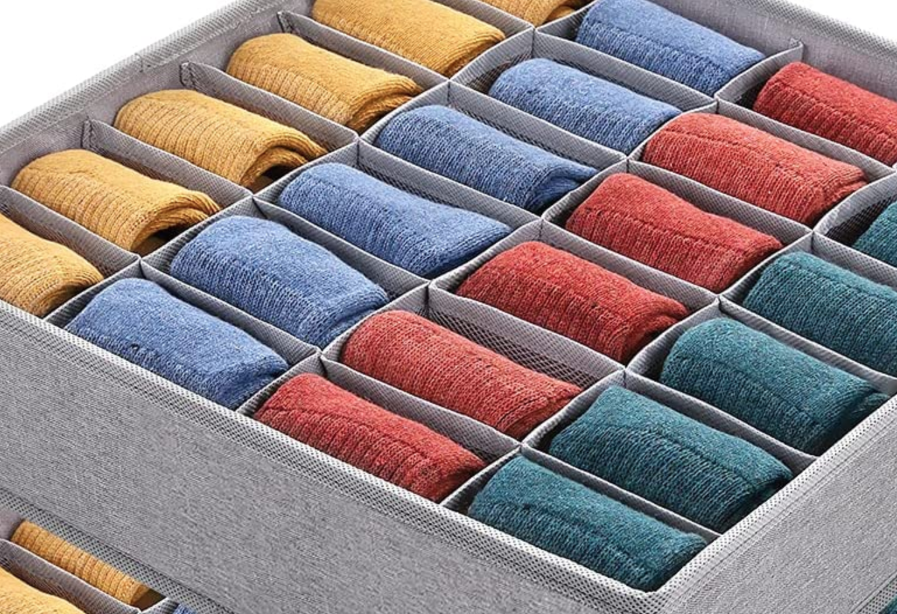

Devoir blanc sur machine
Description du sujet
Votre gestionnaire de chaussettes

- Ce devoir est l'occasion de créer un logiciel permettant de gérer vos chaussettes.
- Chaque méthode créée devra avoir sa
javadocassociée. - Les tests unitaires vous sont donnés dans ce sujet. A vous de les copier/coller dans votre package de tests.
- durée : 1H30
- le devoir est sur 22 points (qui seront ramenés sur 20)
- Nous sommes dans le cadre d'un devoir blanc, vous pouvez donc consulter vos TP et demander de l'aide à votre enseignant. Par contre le jour du vrai devoir, seule la documentation officielle de java sera autorisée.
- Lors d'un vrai devoir vous devrez déposer une archive (créée avec NetBeans) sur une page moodle dédiée. Vous pouvez vous entrainer avec [cette page]
Enfin une application pour gérer vos chaussettes !
- il existe des chaussettes de 4 couleurs différentes : bleues, noires, jaunes, rouges
- une chaussette se définit par une couleur et une taille, et possède un numéro
- une paire de chaussettes est constituée d'une chaussette gauche et d'une chaussette droite
- un panier de linge sale permet de stocker les chaussettes (une par une)
- une fois lavées, les chaussettes sont mises par paires dans un tiroir.
- vous allez coder une application permettant de placer vos chaussettes sales dans un panier, puis de les ranger par paires similaires dans un tiroir.
Création des classes
Énumération Couleur
Question 1 (1 point)
Créer l'énumération Couleur contenant les 4 couleurs possibles :
BLEUE, ROUGE, JAUNE et NOIRE.
Classe Chaussette
Question 2 (2 points)
Créer la classe Chaussette. Ses 3 attributs seront :
- un attribut de nom
couleurde typeCouleur, - un attribut de nom
tailleet de typeint, - un attribut de nom
numeroet de typeint, - un attribut de nom
nbChaussettesde typeintpermettant de compter le nombre de chaussettes créées.nbChaussettesdoit donc êtrestatic.
Créer également le constructeur Chaussette(Couleur coul, int taille)
permettant d'instancier cette classe.
Le numéro d'une chaussette correspond au nombre de chaussettes créées avant
elle.
Le test unitaire suivant doit passer :
// aucune chaussette créée
assertEquals(0, Chaussette.nbChaussettes);
// création d'une chaussette bleue
Chaussette c1 = new Chaussette(Couleur.BLEUE, 31);
assertEquals(Couleur.BLEUE, c1.couleur);
assertEquals(31, c1.taille);
assertEquals(0, c1.numero);
assertEquals(1, Chaussette.nbChaussettesCreees());
// création d'une chaussette jaune
Chaussette c2 = new Chaussette(Couleur.JAUNE, 30);
assertEquals(Couleur.JAUNE, c2.couleur);
assertEquals(30, c2.taille);
assertEquals(1, c2.numero);
assertEquals(2, Chaussette.nbChaussettesCreees());
// création d'une chaussette noire
Chaussette c3 = new Chaussette(Couleur.NOIRE, 30);
assertEquals(Couleur.NOIRE, c3.couleur);
assertEquals(30, c3.taille);
assertEquals(2, c3.numero);
assertEquals(3, Chaussette.nbChaussettesCreees());
// création d'une chaussette rouge
Chaussette c4 = new Chaussette(Couleur.ROUGE, 41);
assertEquals(Couleur.ROUGE, c4.couleur);
assertEquals(41, c4.taille);
assertEquals(3, c4.numero);
assertEquals(4, Chaussette.nbChaussettesCreees());
// création d'une chaussette rouge de même taille
Chaussette c5 = new Chaussette(Couleur.ROUGE, 41);
assertEquals(Couleur.ROUGE, c5.couleur);
assertEquals(41, c5.taille);
assertEquals(4, c5.numero);
assertEquals(5, Chaussette.nbChaussettesCreees());
Question 3 (1 point)
Écrire la méthode void afficheChaussette() de la classe Chaussette qui affiche la phrase : "Je suis la chaussette numero 3, de taille 47 et de couleur ROUGE" si l'on exécute le code suivant après avoir créé 3 chaussettes avant celle-ci :
Chaussette c = new Chaussette(Couleur.ROUGE, 47);
c.afficheChaussette();
Classe PaireChaussettes
Question 4 (1 point)
Créer la classe PaireChaussettes. Ses 3 attributs seront :
- une
Chaussettedont le nom estgauche, - une
Chaussettedont le nom estdroite, - un attribut de type
intde nomnbPairespermettant de mémoriser le nombre de paires créées. Il faut donc que cet attribut soitstatic. - un attribut
numerode typeintindiquant le numéro de cette paire. Ce numéro correspond au nombre de paires créées avant celle-ci.
Créez le constructeur PaireChaussettes(Chaussette g, Chaussette d)
permettant d'affecter à l'attribut gauche la Chaussette g
passée en paramètre (même chose pour la droite), de renseigner
le numéro de la paire, et de mettre à jour nbPaires.
Le test unitaire suivant doit passer.
Chaussette c0 = new Chaussette(Couleur.BLEUE, 31);
assertEquals(0, c0.numero);
Chaussette c1 = new Chaussette(Couleur.BLEUE, 31);
assertEquals(1, c1.numero);
assertEquals(0, PaireChaussettes.nbPaires);
PaireChaussettes p1 = new PaireChaussettes(c0, c1);
assertEquals(1, PaireChaussettes.nbPaires);
assertEquals(0, p1.numero);
assertNotNull(p1.gauche);
assertEquals(0, p1.gauche.numero);
assertNotNull(p1.droite);
assertEquals(1, p1.droite.numero);
Question 5 (1 point)
Créer la méthode de classe int nbPairesCreees() qui retourne la valeur nbPaires, soit le nombre de paires créées.
Classe Panier
Question 6 (1 point)
Créer la classe Panier. Cette classe contient 3 attributs :
- un tableau de
Chaussettede nomp, - un attribut
nbChaussettesPanierde typeintafin de savoir combien de chaussettes sont contenues dans ce tableau, - un entier
taillequi indique la capacité du panier.
Créer le constructeur Panier(int uneTaille) permettant d'initialiser taille, p et nbChaussettesPanier.
Le test unitaire suivant doit passer :
Panier p1 = new Panier(3);
assertEquals(3, p1.taille);
assertNotNull(p1.p);
assertEquals(3, p1.p.length);
assertEquals(0, p1.nbChaussettesPanier);
Classe Tiroir
Question 7 (1 point)
Créez enfin la classe Tiroir. Cette classe contient 3 attributs :
- un tableau de
PaireChaussettesdont le nom estt, - une constante dont le nom est
TAILLE_TIROIRet dont le type eststatic intet qui vaudra4. Cette constante indique la taille du tiroir, - un
intde nomnbPairesindiquant combien de paires contient le tableau.
Créer le constructeur Tiroir() permettant d'initialiser t et nbPaires.
Les tests unitaires suivants doivent passer :
Tiroir t1 = new Tiroir();
assertNotNull(t1.t);
assertEquals(Tiroir.TAILLE_TIROIR, t1.t.length);
assertEquals(0, t1.nbPaires);
Fonctionnalités
Ajouter une chaussette au panier
Question 8 (2 points)
Créer la méthode ajouterChaussette(Chaussette c). Cette méthode retourne true si elle a réussi à ajouter la chaussette c au tableau p, false sinon. Une chaussette ne peut pas être ajoutée si le panier est déjà plein. Une chaussette est unique. Elle ne peut donc pas être ajoutée deux fois dans le panier (c'est à vous de vérifier ce cas de figure). Par contre on peut bien avoir deux chaussettes de même taille et même couleur du moment qu'elles ne sont pas associées à la même référence. Vous n'oublierez pas de mettre à jour le nombre de chaussettes contenues dans le panier.
Les tests unitaires suivants doivent passer :
Panier p1 = new Panier(3);
Chaussette c1 = new Chaussette(Couleur.BLEUE, 31);
Chaussette c2 = new Chaussette(Couleur.BLEUE, 31);
Chaussette c3 = new Chaussette(Couleur.BLEUE, 30);
Chaussette c4 = new Chaussette(Couleur.ROUGE, 31);
// panier vide
assertEquals(0, p1.nbChaussettesPanier);
// ajout première chaussette : ok
assertTrue(p1.ajouterChaussette(c1));
assertEquals(1, p1.nbChaussettesPanier);
// ajout même chaussette : ko
assertFalse(p1.ajouterChaussette(c1));
assertEquals(1, p1.nbChaussettesPanier);
// ajout seconde chaussette : ok
assertTrue(p1.ajouterChaussette(c2));
assertEquals(2, p1.nbChaussettesPanier);
// ajout même chaussette : ko
assertFalse(p1.ajouterChaussette(c2));
assertEquals(2, p1.nbChaussettesPanier);
// ajout première chaussette : ko
assertFalse(p1.ajouterChaussette(c1));
assertEquals(2, p1.nbChaussettesPanier);
// ajout chaussette null : ko
assertFalse(p1.ajouterChaussette(null));
assertEquals(2, p1.nbChaussettesPanier);
// ajout troisième chaussette : ok
assertTrue(p1.ajouterChaussette(c3));
assertEquals(3, p1.nbChaussettesPanier);
// dépassement de capacité
assertFalse(p1.ajouterChaussette(c4));
assertEquals(3, p1.nbChaussettesPanier);
Retirer une chaussette du panier
Question 9 (3 points)
Écrire la méthode retirerChaussette(int numChaussette) qui retourne
true si la chaussette dans la case numéro numChaussette du panier
a bien été enlevée, false sinon.
La chaussette dans la case numChaussette ne peut être enlevée que
s'il y a bien une chaussette dedans. Comme dans l'exemple ci-dessous,
si la chaussette n'est pas en dernière case, alors la dernière chaussette
du tableau est déplacée dans la case désormais vide.
Imaginons que le panier contienne trois chaussettes (avec un panier pouvant en contenir au maximum 3).
| [0] | [1] | [2] |
| Rouge/31 | Rouge/41 | Noire/37 |
Si on enlève du panier la numéro 0 alors le tableau devient :
| [0] | [1] | [2] |
| Noire/37 | Rouge/41 | null |
Si on avait, à la place, enlevé du panier la numéro 2 alors le tableau deviendrait :
| [0] | [1] | [2] |
| Rouge/31 | Rouge/41 | null |
Dans les deux cas, le nombre de chaussettes dans le panier passe de 3 à 2.
Les tests unitaires suivants doivent passer :
Panier p1 = new Panier(3);
Chaussette c1 = new Chaussette(Couleur.BLEUE, 31);
Chaussette c2 = new Chaussette(Couleur.BLEUE, 31);
Chaussette c3 = new Chaussette(Couleur.BLEUE, 30);
Chaussette c4 = new Chaussette(Couleur.ROUGE, 31);
// quelques tests sur un panier vide
// retirer la chaussette d'indice -1 : ko
assertFalse(p1.retirerChaussette(-1));
assertEquals(0, p1.nbChaussettesPanier);
// retirer la chaussette d'indice 0 non ajoutée : ko
assertFalse(p1.retirerChaussette(0));
assertEquals(0, p1.nbChaussettesPanier);
// retirer la chaussette d'indice 3 non ajoutée : ko
assertFalse(p1.retirerChaussette(3));
assertEquals(0, p1.nbChaussettesPanier);
// retirer la chaussette d'indice 4 : ko
assertFalse(p1.retirerChaussette(4));
assertEquals(0, p1.nbChaussettesPanier);
// obtenir [c1 _ _ ] puis retirer c1
p1.ajouterChaussette(c1);
// retirer une chaussette d'une case vide : ko
assertFalse(p1.retirerChaussette(1));
assertEquals(1, p1.nbChaussettesPanier);
// retirer une chaussette de l'indice -1 : ko
assertFalse(p1.retirerChaussette(-1));
assertEquals(1, p1.nbChaussettesPanier);
// retirer une chaussette d'une case vide : ko
assertFalse(p1.retirerChaussette(3));
assertEquals(1, p1.nbChaussettesPanier);
// retirer une chaussette d'une case vide : ko
assertFalse(p1.retirerChaussette(2));
assertEquals(1, p1.nbChaussettesPanier);
// retirer une chaussette d'une case pleine : ok
assertTrue(p1.retirerChaussette(0));
assertEquals(0, p1.nbChaussettesPanier);
assertNull(p1.p[0]);
assertNull(p1.p[1]);
assertNull(p1.p[2]);
// ajout de chaussettes pour obtenir [c1 c2 c3]
assertTrue(p1.ajouterChaussette(c1));
assertEquals(1, p1.nbChaussettesPanier);
assertTrue(p1.ajouterChaussette(c2));
assertEquals(2, p1.nbChaussettesPanier);
assertTrue(p1.ajouterChaussette(c3));
assertEquals(3, p1.nbChaussettesPanier);
// retirer une chaussette d'une case pleine : ok
assertTrue(p1.retirerChaussette(1)); // donne [c1 c3 _ ]
assertEquals(2, p1.nbChaussettesPanier);
assertEquals(c3.numero, p1.p[1].numero);
// ajouter et retirer une chaussette : ok
assertTrue(p1.ajouterChaussette(c2)); // donne [c1 c3 c2]
assertTrue(p1.retirerChaussette(2)); // donne [c1 c3 _ ]
assertEquals(2, p1.nbChaussettesPanier);
assertEquals(c3, p1.p[1]);
// vider le panier
assertTrue(p1.retirerChaussette(1)); // donne [c1 _ _ ]
assertEquals(1, p1.nbChaussettesPanier);
assertEquals(c1, p1.p[0]);
assertTrue(p1.retirerChaussette(0));
assertEquals(0, p1.nbChaussettesPanier);
assertNull(p1.p[0]);
assertNull(p1.p[1]);
assertNull(p1.p[2]);
Apparier
Question 10 (3 points)
Dans la classe PaireChaussettes, codez la méthode
static boolean pairePossible(Chaussette g, Chaussette d)
qui indique si les chaussettes g et d peuvent constituer une paire.
Une paire ne peut être constituée que de deux chaussettes parfaitement identiques (mêmes tailles et mêmes couleurs) mais de numéros différents.
Les tests unitaires suivants doivent passer.
Chaussette c1 = new Chaussette(Couleur.BLEUE, 31);
Chaussette c2 = new Chaussette(Couleur.BLEUE, 31);
Chaussette c3 = new Chaussette(Couleur.BLEUE, 30);
Chaussette c4 = new Chaussette(Couleur.ROUGE, 31);
Chaussette c5 = null;
Chaussette c6 = new Chaussette(Couleur.ROUGE, 31);
assertTrue(PaireChaussettes.pairePossible(c1, c2));
assertFalse(PaireChaussettes.pairePossible(c1, c1));
assertFalse(PaireChaussettes.pairePossible(c1, c3));
assertFalse(PaireChaussettes.pairePossible(c1, c4));
assertFalse(PaireChaussettes.pairePossible(c1, c5));
assertTrue(PaireChaussettes.pairePossible(c4, c6));
Ajouter une paire dans un tiroir
Question 11 (2 points)
Écrire la méthode boolean ajouterPaire(PaireChaussettes p) qui permet
d'ajouter une paire p dans la première case vide.
Cette méthode retourne true si l'ajout a pu se faire, false sinon.
Comme pour le panier, chaque paire est identifiée par son numéro
et ne peut être présente qu'un seule fois,
et on ne peut pas ajouter une paire si le tiroir est plein.
Les tests unitaires suivants doivent passer (avec TAILLE_TIROIR qui vaut 4) :
Tiroir t1 = new Tiroir();
Chaussette c1 = new Chaussette(Couleur.BLEUE, 31);
Chaussette c2 = new Chaussette(Couleur.BLEUE, 31);
Chaussette c3 = new Chaussette(Couleur.BLEUE, 40);
Chaussette c4 = new Chaussette(Couleur.BLEUE, 40);
Chaussette c5 = new Chaussette(Couleur.ROUGE, 31);
Chaussette c6 = new Chaussette(Couleur.ROUGE, 31);
Chaussette c7 = new Chaussette(Couleur.NOIRE, 31);
Chaussette c8 = new Chaussette(Couleur.NOIRE, 31);
Chaussette c9 = new Chaussette(Couleur.NOIRE, 41);
Chaussette c10 = new Chaussette(Couleur.NOIRE, 41);
PaireChaussettes p1 = new PaireChaussettes(c1, c2);
PaireChaussettes p2 = new PaireChaussettes(c3, c4);
PaireChaussettes p3 = new PaireChaussettes(c5, c6);
PaireChaussettes p4 = new PaireChaussettes(c7, c8);
PaireChaussettes p5 = new PaireChaussettes(c9, c10);
// ajout de la paire p1 : ok, donne [ p1 _ _ _ ]
assertTrue(t1.ajouterPaire(p1));
assertEquals(1, t1.nbPaires);
assertFalse(t1.ajouterPaire(p1));
assertEquals(1, t1.nbPaires);
assertNotNull(t1.t[0]);
assertEquals(p1.numero, t1.t[0].numero);
// ajout de la paire p2 : ok, donne [ p1 p2 _ _ ]
assertTrue(t1.ajouterPaire(p2));
assertEquals(2, t1.nbPaires);
assertFalse(t1.ajouterPaire(p1));
assertFalse(t1.ajouterPaire(p2));
assertEquals(2, t1.nbPaires);
// ajout de la paire p3 : ok, donne [ p1 p2 p3 _ ]
assertTrue(t1.ajouterPaire(p3));
assertEquals(3, t1.nbPaires);
assertFalse(t1.ajouterPaire(p1));
assertFalse(t1.ajouterPaire(p2));
assertFalse(t1.ajouterPaire(p3));
assertEquals(3, t1.nbPaires);
// ajout de la paire p4 : ok, donne [ p1 p2 p3 p4 ]
assertTrue(t1.ajouterPaire(p4));
assertEquals(4, t1.nbPaires);
assertFalse(t1.ajouterPaire(p1));
assertFalse(t1.ajouterPaire(p2));
assertFalse(t1.ajouterPaire(p3));
assertEquals(4, t1.nbPaires);
// ajout de la paire p5 : ko, reste [ p1 p2 p3 p4 ]
assertFalse(t1.ajouterPaire(p5));
assertEquals(4, t1.nbPaires);
assertFalse(t1.ajouterPaire(p1));
assertFalse(t1.ajouterPaire(p2));
assertFalse(t1.ajouterPaire(p3));
assertFalse(t1.ajouterPaire(p4));
assertEquals(4, t1.nbPaires);
// test contenu final [ p1 p2 p3 p4 ]
assertNotNull(t1.t[0]);
assertEquals(p1.numero, t1.t[0].numero);
assertNotNull(t1.t[1]);
assertEquals(p2.numero, t1.t[1].numero);
assertNotNull(t1.t[2]);
assertEquals(p3.numero, t1.t[2].numero);
assertNotNull(t1.t[3]);
assertEquals(p4.numero, t1.t[3].numero);
Question 12 (1 point)
Afficher le contenu du tiroir sur le modèle suivant. Ici 3 paires sont rangées dans les 3 premières cases du tiroir. Le tiroir contient 4 cases, la dernière est donc vide.
Pensez à créer une méthode pour afficher une paire dans la classe
PaireChaussettes, et à l'utiliser ici.
----------
| BLEUE/31 |
----------
| BLEUE/31 |
----------
| ROUGE/31 |
----------
| |
----------
Nombre de chaussettes seules
Question 13 (3 points)
Dans la classe Panier, créez la méthode int nbChaussettesSeules()
qui compte combien de chaussettes seront seules après les avoir appariées
(= après avoir formé les paires possibles).
Par exemple si le panier contient les 10 chaussettes suivantes :
| [0] | [1] | [2] | [3] | [4] | [5] | [6] | [7] | [8] | [9] |
| Bleue/31 | Bleue/30 | Bleue/31 | Bleue/31 | Rouge/31 | Rouge/27 | Rouge/31 | Noire/41 | Noire/41 | Noire/41 |
Les chaussettes contenues dans les cases 1, 3, 5 et 9 sont des chaussettes qui ne trouveront pas de chaussette pour faire la paire avec elles. Celle en case 1 car il n'y a pas d'autre chaussette bleue de taille 30, celle en case 3 car une paire a déjà été formée avec les chaussettes bleues de taille 31 en cases 0 et 2, etc.
Les tests unitaires suivants doivent passer :
Panier p1 = new Panier(13);
p1.ajouterChaussette(new Chaussette(Couleur.BLEUE, 31));
p1.ajouterChaussette(new Chaussette(Couleur.BLEUE, 30));
p1.ajouterChaussette(new Chaussette(Couleur.BLEUE, 31));
p1.ajouterChaussette(new Chaussette(Couleur.BLEUE, 31));
p1.ajouterChaussette(new Chaussette(Couleur.ROUGE, 31));
p1.ajouterChaussette(new Chaussette(Couleur.ROUGE, 27));
p1.ajouterChaussette(new Chaussette(Couleur.ROUGE, 31));
p1.ajouterChaussette(new Chaussette(Couleur.NOIRE, 41));
p1.ajouterChaussette(new Chaussette(Couleur.NOIRE, 41));
p1.ajouterChaussette(new Chaussette(Couleur.NOIRE, 41));
assertEquals(4, p1.nbChaussettesSeules());